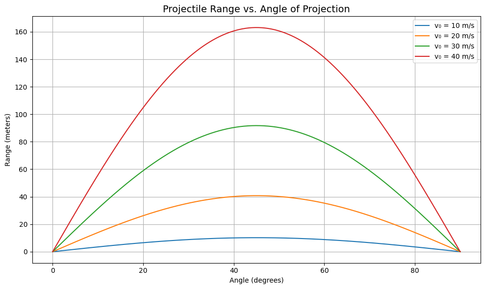

Problem 1
Investigating the Range as a Function of the Angle of Projection
1. Theoretical Foundation
Projectile motion is a foundational topic in classical physics. When a body is projected into the air under the influence of gravity alone (ideal case), it follows a parabolic path. The analysis of this motion offers insights into kinematics and vector decomposition.
1.1 Assumptions of the Ideal Model
To simplify the analysis, we make the following assumptions:
- The projectile is launched from and lands at the same height.
- Air resistance is neglected.
- Gravitational acceleration is constant at \(g = 9.81 \, \text{m/s}^2\).
- The Earth's curvature and rotation are ignored.
1.2 Deriving the Equations of Motion
Let a projectile be launched with:
- Initial speed: \(v_0\)
- Angle of projection: \(\theta\)
Decomposing the initial velocity:
- Horizontal component: \(v_{0x} = v_0 \cos\theta\)
- Vertical component: \(v_{0y} = v_0 \sin\theta\)
From kinematics:
-
Horizontal displacement: $$ x(t) = v_0 \cos\theta \cdot t $$
-
Vertical displacement: $$ y(t) = v_0 \sin\theta \cdot t - \frac{1}{2} g t^2 $$
Setting \(y(t) = 0\) to find total time of flight:
Factoring:
Thus, total flight time is:
1.3 The Range of the Projectile
The range \(R\) is the horizontal distance traveled in time \(T\):
This is the key equation governing ideal projectile range.
2. Analysis of the Range
2.1 Angle Dependence
The range formula is:
The function \(\sin(2\theta)\) reaches its maximum value of 1 when \(2\theta = 90^\circ\), or \(\theta = 45^\circ\).
2.2 Symmetry
Since \(\sin(2\theta) = \sin(180^\circ - 2\theta)\), the range is symmetric about \(\theta = 45^\circ\). That means angles like \(30^\circ\) and \(60^\circ\) yield the same range.
2.3 Influence of Other Parameters
-
Initial velocity (\(v_0\)): $$ R \propto v_0^2 $$ Doubling the speed increases the range by a factor of 4.
-
Gravity (\(g\)): $$ R \propto \frac{1}{g} $$ On the Moon (where \(g \approx 1.63 \, \text{m/s}^2\)), projectiles travel much farther.
3. Practical Applications and Extensions
3.1 Applications
- Sports: Modeling ball trajectories.
- Engineering: Designing launch systems.
- Physics/Aerospace: Orbital mechanics and ballistic arcs.
3.2 Limitations of the Ideal Model
- Ignores air resistance
- Assumes level ground
- Neglects spin and lift
- No wind effects
3.3 Toward Realistic Models
- Add drag: \(F_d = -kv\)
- Use numerical solvers (e.g., Runge-Kutta)
- Modify equations for launch/landing height differences
4. Python Implementation
This script simulates and plots the range of a projectile as a function of launch angle for various initial velocities.
Code
import numpy as np
import matplotlib.pyplot as plt
# Constants
g = 9.81 # m/s^2
v0_list = [10, 20, 30, 40] # initial velocities
# Angle array
angles_deg = np.linspace(0, 90, 500)
angles_rad = np.radians(angles_deg)
# Plot setup
plt.figure(figsize=(10, 6))
plt.title("Projectile Range vs. Angle of Projection", fontsize=14)
plt.xlabel("Angle (degrees)")
plt.ylabel("Range (meters)")
plt.grid(True)
# Plotting ranges for each velocity
for v0 in v0_list:
R = (v0**2 * np.sin(2 * angles_rad)) / g
plt.plot(angles_deg, R, label=f'v₀ = {v0} m/s')
plt.legend()
plt.tight_layout()
plt.show()
